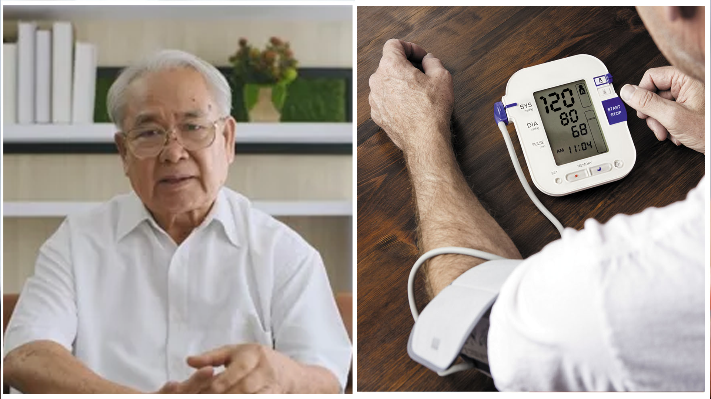
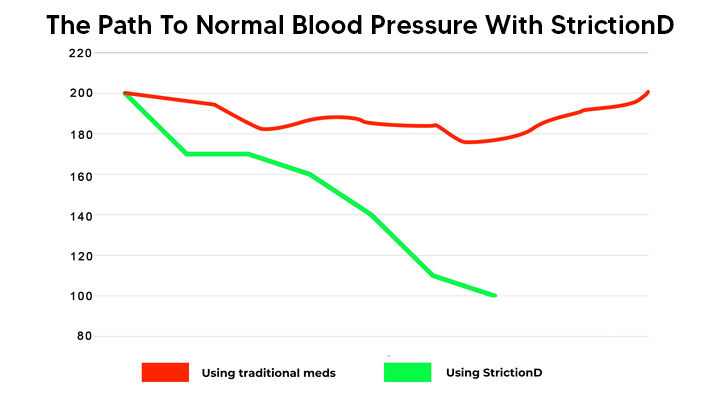

71-Year-Old Retiree Regains Vibrant Health and Reduces Blood Pressure in Just 10 Weeks WITHOUT Medication Using "Advanced Vascular Health Protocol"
By Richard Mason
Updated Tuesday, April 12, 2024
Managing blood pressure is a common challenge, but imagine if it was possible to stabilize your blood pressure levels without having to give up the foods you love?
There's groundbreaking news of a new heart health approach creating a stir in the health community, promising just that… WITHOUT medication.
Whether you're dealing with serious blood pressure concerns or just trying to maintain healthy levels, few things are as concerning as the prospect of lifelong medication. It’s daunting to think about overhauling your entire diet and daily routine, and the thought of dependency on medication is disheartening.
Sure, you might start with determined efforts to adjust your diet and lifestyle for a few weeks or maybe even a couple of months, but life has a way of presenting temptations or stressors, and BAM! Suddenly, you find yourself backsliding, and your blood pressure levels are right back where they started, if not worse.
A New Breakthrough Blood Pressure Formula Promises An Easy Way To Manage Your Levels…
Without Sacrificing The Foods You Love...
Does this seem unbelievable?
71-year-old George Bennett is living proof that it's real.
Here's George's story in his own words:
- "Like many my age, I was facing rising blood pressure levels, and despite trying everything recommended to manage it, I never saw lasting results."
- "Each attempt to control my diet or my medication seemed only to have a temporary effect."
- "It was incredibly discouraging, to the point where I was about to resign myself to a life of restrictions and potential health complications."
-
"But then, about 6 months ago, my doctor gave me a wake-up call."
-
"My blood pressure was through the roof, and my cholesterol levels were consistently high."
-
"With a risk dangerously over the recommended range, I was staring down the barrel of serious health risks like heart disease or stroke."
- "Desperate for a real solution, I scoured the internet for any alternative that could help me."
That’s when George stumbled upon an inspiring story that would change everything.
It was about another person in their late sixties named Alex Tremblay who had transformed their health in just 9 weeks with what was being praised as the “Advanced Vascular Health Protocol”. And here are Alex Tremblay’s astonishing before and after health reports, showcasing an incredible turnaround in blood pressure and cholesterol levels!
Alex had always been proactive about personal wellness. But despite efforts to maintain a healthy lifestyle, Alex found his blood pressure and cholesterol levels gradually creeping up—a trend he was desperate to reverse. Then, a turning point came for Alex when he was selected to participate in a clinical trial for a new vascular health management system, spearheaded by a team of medical professionals who specialized in heart health.
This team had pinpointed a significant barrier to maintaining healthy blood pressure levels, a condition they termed "Vascular Resistance."
What Is Vascular Resistance and How Does It Affect Blood Pressure Management?
Dr. Emily Jenkins, a leading figure in this innovative health research, explains:
"Vascular Resistance is the body’s diminishing response to blood flow due to chronic exposure to high blood pressure, often worsened by a sedentary lifestyle. It results in a 'Plateau Effect,' where, despite one’s best efforts, improvements in blood pressure levels stagnate. This plateau can lead to a cycle of frustration and despair."
Dr. Jenkins, working alongside her team, adds:
"Our clinical trials have demonstrated that addressing Vascular Resistance with a natural, potent formula can significantly enhance blood flow and pressure regulation, enabling individuals to manage their blood pressure effectively throughout the day, regardless of lifestyle patterns."
The real concern was avoiding overcorrection and the risk of severe hypertension, which is equally hazardous.
Their breakthrough is the '3-Stage Vascular Health Protocol,' a system designed for efficacy and safety, supporting long-term health maintenance."
After the trial, where participants like Alex saw impressive improvements in managing their blood pressure and overall health, this system is now being released as...
The Pioneering StrictionD Method For Optimal Blood Pressure and Heart Health Control!
StrictionD emerges as a beacon of hope, with its dual-action formula that addresses the "Vascular Resistance" challenge and maintains blood pressure levels around the clock...
…EVEN WHILE YOU SLEEP…
…reinforced by its '3-Stage Vascular Health Protocol' which neutralizes the "Plateau Effect" by constantly adapting to the body’s needs.
StrictionD is not just a supplement; it’s a lifestyle adjustment tool that "TURNS ON" your body’s natural regulation mechanisms and "TURNS OFF" the resistance to maintaining optimal vascular health.
This ensures you maintain balanced blood pressure levels, reaching a state of health you’re comfortable with, then transitioning to "maintenance mode" for long-term well-being.
George headed over to the StrictionD website and discovered they were running a limited-time offer for new customers—a discounted 30-Day Supply of what they call The Introductory Kit. Intrigued, he placed his order. When the kit arrived, he dove into the regimen following the straightforward instructions without overhauling his usual habits. He didn't change his diet or begin an intense exercise program. Remarkably, it wasn’t long before he felt more energetic, and his health readings started to show significant improvement.
Here we document George's 12-week transformation, a testament to how StrictionD has helped him balance his blood pressure and improve his heart health WITHOUT any radical dietary restrictions or exhaustive workout routines.
On George’s follow-up visit, his doctor was astounded not just by the physical improvements but also by the substantial change in George's blood pressure readings.
His risk levels had come down to a healthy number, reducing his risk for heart disease.
In the span of three months of using StrictionD, George has gained the confidence that with continued use, he can manage his blood pressure levels effectively and safeguard himself against the risks associated with heart disease.
The growing consensus among health experts and users is clear: the scientifically formulated and clinically refined StrictionD could very well represent the most significant advancement in blood pressure and heart health management the health industry has seen.
If you're curious to experience the changes that StrictionD has brought to George’s life...
...the very same Introductory Kit that kick-started George’s journey to better health is currently available at a discounted rate.
REMEMBER: While using this supplement, you may experience substantial improvements in blood sugar and blood pressure levels quickly. If such changes occur, consult with your healthcare provider to adjust the use of the supplement accordingly.

A limited number of StrictionD Introductory Kits are available today, exclusively for our readers.
Get Your Free Bottles NowThis offer is limited
The Amazing Story Of How One Woman Lost 77 Kilograms And Made A Shocking Discovery
One of our readers, Anna Cortes had been repeatedly warned by her doctor that her weight of 148 kilograms could drastically shorten her life, but then 3 years ago she was diagnosed with Type II diabetes. To make matters worse, the news came at a time when Anna's relationship with her husband seemed to be coming completely undone. "I was extremely depressed and food was my only comfort," Anna explained. "It was the only thing I felt I could turn to when everything around me was falling apart."
Carla Vogel
"Very informative article. It's good to see that there are effective solutions for those of us struggling with blood pressure and cholesterol levels. It's crucial, especially for retirees like myself who need straightforward health maintenance."
Arnold Jennings
"I tried to order but it seems like it’s not available in my country yet. Disappointed because the reviews sound very promising!"
Martha Thompson
"My retirement community has been buzzing about this heart health supplement. A few of us tried it, and I must say, it really works as promised. Here’s where I got a discount: http://goo.gl/4ffds43."
Susan Harris
"I’ve been following the regimen outlined and the additional dietary advice provided. The results are remarkable. For anyone starting, make sure to ask for their nutritional coaching for better guidance."
Norma Fielding
"My son ordered StrictionD for me after a friend had great success with it. Started just a few days ago, and I'm already noticing a difference!"
Bill Henderson
"Having managed a health food store for years, I’ve seen many supplements come and go. StrictionD is one that truly stands out and has garnered significant interest."
Eleanor Brooks
"My husband and I decided to try StrictionD before our 50th wedding anniversary to improve our heart health. We just placed our order and can't wait to see the results!"
George Kramer
"At first, I was skeptical, but after reading so much positive feedback, I had to try it. The buzz about this new heart health solution is well-deserved!"
Richard Blake
"I saw a segment about this product on a health channel. My wife and I tried it, and the results are nothing short of miraculous. Our energy levels and overall wellness have improved dramatically!"
Patricia Scott
"Just placed my order! Excited to start and hopeful about the potential improvements in my heart health."
Linda Murphy
"A friend recommended StrictionD to me, and I received my order incredibly fast. Great service and looking forward to the benefits."
Fred Collins
"I wasn’t sure at first, but the ongoing discount convinced me to try StrictionD. Looking forward to feeling the benefits of better blood pressure control."